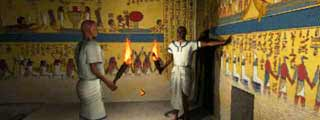
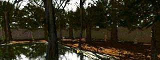

| 概要 | 地図 |
| 淡いヒント集 | ヒント集 | 的確なヒント集 |
| 攻略最短ルート |
ここでは、正解を書いています。
ヒントだけにとどめておきたいのならば、「ヒント集」を見てください。
自力で解きたければ、少し見るのも危険です。
| Level-1 セティ一世の墓  |
| Level-2 デイル・エル・メディーナ |
| Level-3 ミイラ職人の仕事場  |
| Level-4 貴族の墓 |
| Level-5 パネヘシの家  |
| Level-6 アモン・レー神殿 |
| 概要 | 地図 |
| 淡いヒント集 | ヒント集 | 的確なヒント集 |
| 攻略最短ルート |
Egypt ～ファラオの謎～
| 目次へ戻る | ページの上部へ |